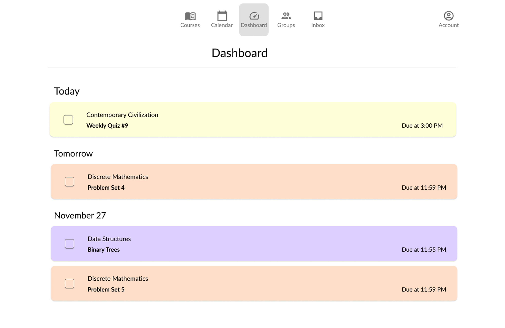
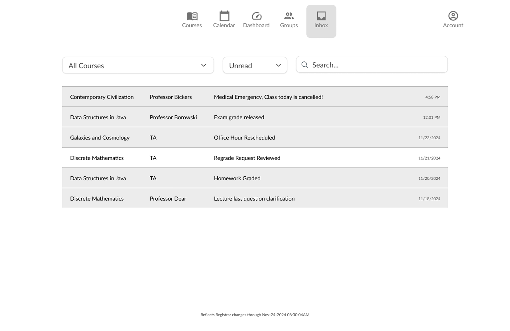

Canvas
is the course management system used at Columbia University. When I first started using Canvas, I found its interface frustrating:
the platform feels cluttered.
There are too many buttons and pages that are rarely used but still take up space, leading to accidental clicks. A lot of information shown is unnecessary for day-to-day tasks and could be removed for a cleaner experience. In general, Canvas follows a maximalist design that compromises usability.
Course List
The design on the right is my redesign of the course list. In the original version, some elements were overly emphasized while more important information was overlooked.
For example, the three-slot semester banner took up too much space. I simplified it into a dropdown menu in the top right corner for better accessibility.
The “Reflects Registrar changes” text was also too prominent. I found it useful only during the shopping period, so I made it smaller and lighter at the bottom of the page to minimize distraction.
Another unnecessary detail was the course number, which I removed. Instead, I included class times to help users differentiate between classes, as times are more intuitive than administrative codes.
I also added a "Next Assignment" feature that displays the upcoming assignment and its due date. If an assignment is due the next day, the text is bolded to draw attention, helping students keep track of deadlines.
Individual Course Page
The individual course page can be very confusing to both faculty user.
For example, what should be in the “home” page of the individual course? Should it be a course description, the exam schedules, office hours? But if thats just information about the course, what should go in the “Course Info” page? And how does that differ from the syllabus?
I always find myself clicking so many different pages just trying to look for my midterm schedules on the course page. In my redesign, I aimed to limit the options that faculty and students could use to improve usability.
I created a dedicated syllabus page for all things that faculty may consider course information, or information that would usually go on a syllabus paper, e.g. course schedule, course description, course time, textbooks, etc.
I also made the landing page when the user select the course to be the assignments page because, it is the most mission critical page by far.
For the other pages, I kept the theme of decluttering in the pages and substituting details for useful information.
Wireframes




Contacts
jyl2199@columbia.edu | linkedin.com/in/jyl2199